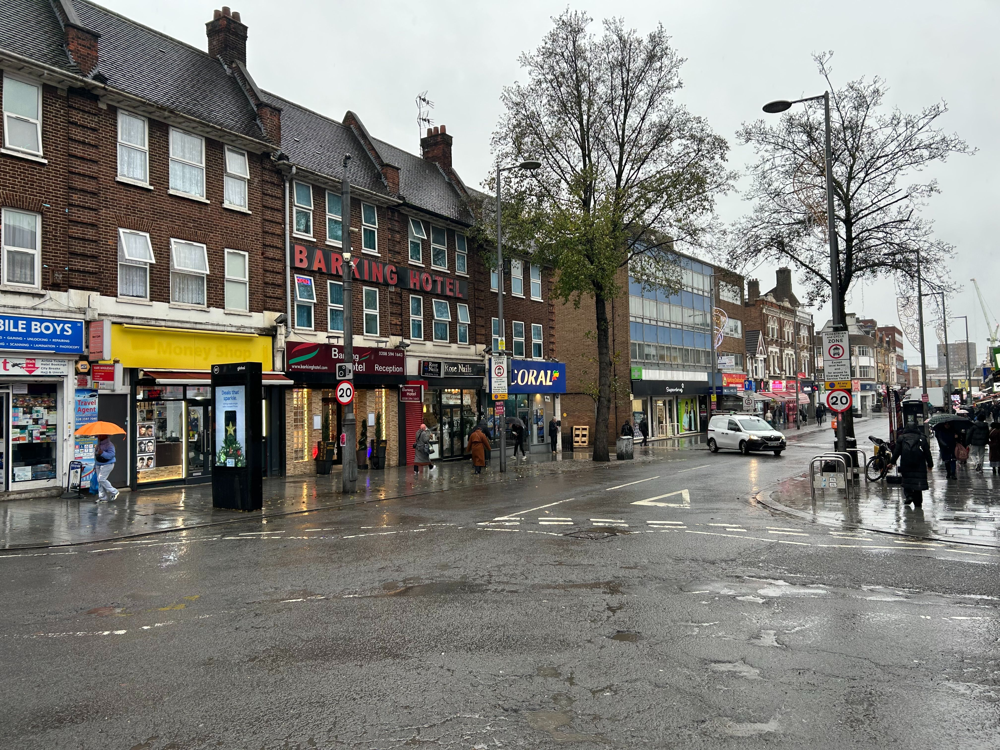
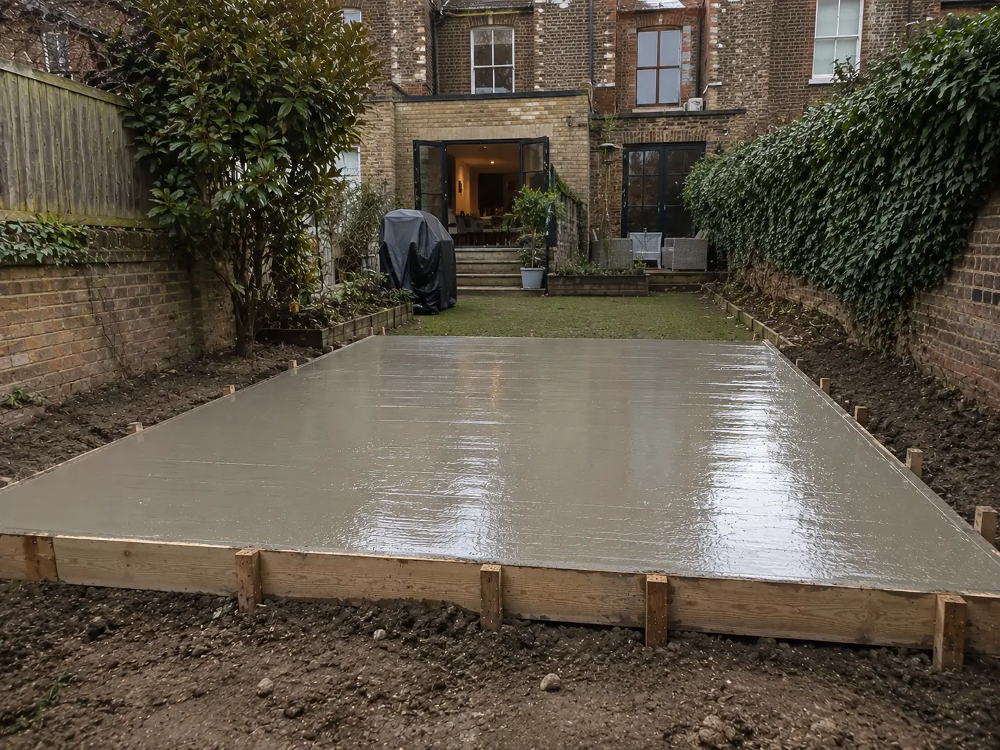

We're specialists in residential concrete foundations in Barking, We're one of the most trusted concrete contractors in IG11
With over 15 years experience in concrete foundation work we've become specialists in our approach for concrete foundations, We install foundations for homes, extensions, garages, garden rooms and structural builds.
We deliver engineered concrete systems ensuring Barking residents and businesses get structural work designed for long term strength, stability, and precision finishing built to handle Barking ground conditions and all building layouts.
Our focus is residential concrete foundations and light commercial projects — from small domestic bases to full structural foundation systems. Every installation is built using reinforced methods, correct sub-base preparation, and industry standard curing processes.
We specialise in residential & light commercial concrete foundations across Barking, delivering strong and stable structural bases for homes, extensions and outbuildings. Our installations are designed around load-bearing performance, ground conditions, and long-term durability.
Many residential properties require upgraded or new concrete foundations due to soil movement, ageing sub-bases, or structural expansion. Our systems ensure correct preparation, reinforcement, and finishing to meet modern residential construction standards.





We install residential concrete foundations for new builds, home extensions, structural alterations and domestic construction projects across Barking. Our team uses reinforced concrete systems, compacted sub-base preparation and controlled curing methods to deliver long-term structural stability, load distribution and reliable performance in varying ground conditions.
Our reinforced residential concrete slab installations provide durable, level surfaces for garages, garden rooms, workshops and residential extensions. Using high-strength concrete mixes and steel reinforcement where required, we deliver slab systems designed to resist cracking, movement and premature surface deterioration.
We provide precision residential concrete base installation for outdoor structures, outbuildings and domestic foundation projects requiring stable ground support and accurate finishing. From excavation and framework installation to pouring and finishing, every stage is completed with attention to structural strength, drainage and long-term durability.
Our residential structural concrete services support load-bearing construction projects requiring reinforced concrete systems for enhanced strength and stability. We install structural concrete foundations, support sections and reinforced concrete applications engineered to handle high-load residential environments and long-term structural performance.
We install reinforced concrete systems using steel reinforcement methods designed to improve structural integrity, weight distribution and crack resistance in residential construction. These systems are commonly used for extensions, garage foundations, workshop bases and domestic structures requiring increased load-bearing support and foundation reliability.
Residential Concrete Projects Completed
Years Of Residential Foundation Experience
Square Metres Of Concrete Installed
Focus On Structural Stability & Ground Preparation


All of our concrete foundation projects follow a structured installation process to ensure strength, accuracy, and long-term performance for all our Barking clients.
Most residential concrete foundation projects begin with a free site visit and structural assessment to evaluate access, ground conditions and foundation requirements.
We provide a clear project breakdown outlining the required foundation system, preparation methods and installation approach for the project.
Correct preparation is critical for long-term structural stability. We prepare the installation area using compacted sub-base systems and accurate levelling methods.
Once preparation is complete, reinforcement systems and concrete installation are carried out using controlled methods designed for strength and durability.
After installation, the concrete is professionally levelled, finished and monitored during curing to support long-term structural performance.
Before completion, every residential concrete foundation project is reviewed to ensure installation quality, structural accuracy and site cleanliness.
With over 15 years of residential concrete foundation experience and hundreds of completed installations, we understand the structural demands, soil conditions and preparation methods required for long-term performance across Barking properties. Our team works on everything from garage bases and garden structures to reinforced residential foundations and light commercial groundwork projects.
Every installation is completed using engineered preparation methods, reinforced concrete systems and precision levelling processes designed to improve structural reliability and minimise future movement issues. We partner with experienced groundwork teams, structural specialists and professional concrete installers to ensure every project is completed to high operational and construction standards.
A lot of residential properties across Barking include older extensions, previous groundwork modifications and varying garden levels which can all affect excavation depth, foundation positioning and site preparation requirements. Properties throughout IG11 often require careful planning before installation begins, particularly where older construction work or existing hardstanding areas are present.
We regularly complete residential concrete foundation projects involving uneven layouts, restricted working areas, existing concrete removal and structural preparation for new extensions or outdoor buildings. Careful site assessment and preparation planning helps ensure installation work is completed efficiently while maintaining accurate foundation layouts and consistent structural support.


We work with established concrete supply operations and batching facilities supporting residential and light commercial foundation projects across Barking.
Using professionally supplied concrete systems helps ensure consistent mix quality, controlled delivery scheduling and reliable performance for structural foundation installations.
Depending on the project requirements, concrete may be supplied using volumetric mixing systems or ready-mix concrete deliveries designed to support efficient pouring and accurate volume management. This allows our foundation installations to maintain consistent structural standards across all our residential and commercial concrete work.
Alongside residential foundation installations, we also support light commercial concrete projects across Barking and surrounding areas. We work on structural concrete foundations, reinforced slab systems and commercial base installations for builders, developers, property improvement projects and commercial construction environments requiring reliable long-term ground support.
Our commercial concrete work is approached with the same focus on structural preparation, reinforcement methods and controlled installation standards used throughout our residential projects. From groundwork preparation and excavation through to reinforcement, pouring and finishing, every stage is carried out with attention to durability, load-bearing performance and long-term structural reliability.
We install commercial concrete foundations for workshops, commercial units, storage buildings, office extensions and structural development projects requiring stable reinforced groundwork. Every foundation system is designed around the intended structural load, site conditions and long-term performance requirements to help support safe and durable construction.
Our reinforced commercial concrete slab installations are used for vehicle access areas, storage facilities, workshop floors and commercial structures requiring durable load-bearing concrete surfaces. We use reinforced installation methods, accurate levelling systems and controlled curing processes to help improve strength, surface longevity and resistance against movement or cracking.
We also provide commercial concrete base installation and structural concrete support for larger groundwork and development projects. This includes reinforced concrete systems for external structures, commercial groundwork preparation, heavy-duty base systems and structural concrete applications requiring dependable installation standards and long-term structural stability.

Residential concrete foundations are commonly installed for detached outdoor structures requiring stable long-term ground support and reliable structural positioning. These types of projects often require accurate levelling, reinforced support methods and controlled sub-base preparation to help reduce movement and improve long-term durability.
Some residential concrete installations are designed to support concentrated external weight loads where structural stability and surface strength are important. Reinforced concrete systems help distribute weight more evenly while improving resistance against sinking, movement and surface cracking over time.
Concrete foundations are regularly used for outdoor residential improvement projects involving new structures, expanded living areas and functional external spaces. Proper excavation, compaction and reinforcement methods help create stable groundwork capable of supporting long-term structural use across varying ground conditions.
Certain reinforced concrete systems are installed in areas experiencing regular vehicle movement or increased structural loading requirements. These projects often require stronger concrete mixes, improved reinforcement methods and carefully prepared sub-base systems designed for durability and long-term load-bearing performance.
Outdoor residential workspaces and utility structures often require level reinforced concrete foundations capable of supporting daily use and long-term structural stability. Controlled installation methods and accurate preparation help improve durability while maintaining consistent foundation performance over time.
Reinforced concrete slabs are frequently installed for residential construction projects requiring stable load-bearing support beneath structural builds and external developments. These systems are designed to improve weight distribution, minimise future movement and provide long-term structural consistency.
Foundation depth depends on the structural load being supported, existing ground conditions and the type of residential build being completed. Larger extensions, structural walls and reinforced concrete installations typically require deeper excavation and stronger sub-base preparation than smaller garden buildings or standard concrete bases. Correct depth planning helps improve long-term stability and reduces the risk of future settlement or structural movement.
Sub-base preparation is one of the most important stages of any concrete foundation installation because the long-term performance of the slab or foundation depends heavily on the stability beneath it. Poor compaction, weak ground preparation or inadequate drainage control can eventually lead to movement, cracking and uneven settlement. Professionally compacted sub-base systems help distribute structural loads more consistently and improve overall foundation durability.
Reinforced concrete systems are designed to improve structural strength and help reduce stress-related cracking over time. Steel reinforcement mesh helps distribute pressure more evenly throughout the concrete structure while improving resistance against movement, shifting loads and ground instability. Reinforced concrete foundations are commonly used for extensions, garages, workshops and light commercial projects requiring increased load-bearing support.
Concrete foundation failure is often linked to poor ground preparation, drainage problems, insufficient reinforcement or long-term ground movement beneath the structure. In some cases, older foundations may also deteriorate due to decades of moisture exposure, changing soil conditions and outdated installation methods. Structural movement, sinking sections and widespread cracking are usually signs that the foundation system is no longer distributing loads correctly.
Concrete begins setting shortly after installation, however full curing takes significantly longer depending on weather conditions, slab thickness and the structural application involved. Controlled curing is important because it helps concrete develop proper long-term strength while reducing the likelihood of premature surface cracking, moisture loss and structural weakness during the early stages of installation.
Yes. Many residential projects across Barking involve restricted side access, uneven gardens, existing structures or limited working space. Careful planning, excavation management and coordinated material delivery methods allow foundation installations to still be completed efficiently while maintaining accurate structural positioning and consistent installation quality.
The concrete used for foundation installations depends on the structural requirements of the project, expected load demands and environmental conditions surrounding the installation area. Residential and commercial concrete projects often require specific concrete strengths, reinforcement methods and pouring approaches to achieve reliable long-term structural performance and durability.
Alongside residential groundwork, we also support light commercial concrete foundation projects across Barking including reinforced slab systems, workshop foundations, storage building bases and structural concrete installations. Commercial projects typically require increased load-bearing consideration, reinforced support systems and more detailed groundwork preparation depending on the intended use of the structure.
Yes. Existing concrete slabs, damaged bases and outdated foundation systems can all be removed before the new installation process begins. Removing unstable or deteriorated concrete helps create a more reliable base for excavation, compaction and reinforcement work while improving the long-term stability of the new foundation system being installed.
Barking weather especially typical rainy conditions can affect curing speed, moisture retention and overall concrete performance during installation. Excessive rainfall, freezing temperatures and rapid heat exposure can all impact how the concrete cures and settles over time. Proper installation timing and controlled curing methods help maintain structural consistency and reduce the risk of surface defects or premature deterioration.
Contact us for residential concrete foundation installation, slab work or structural base construction.
Request a Quote